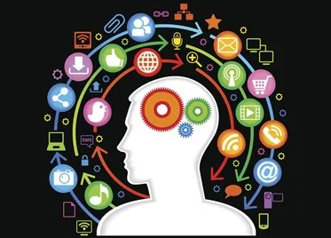
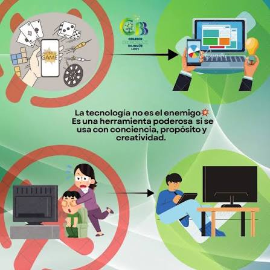
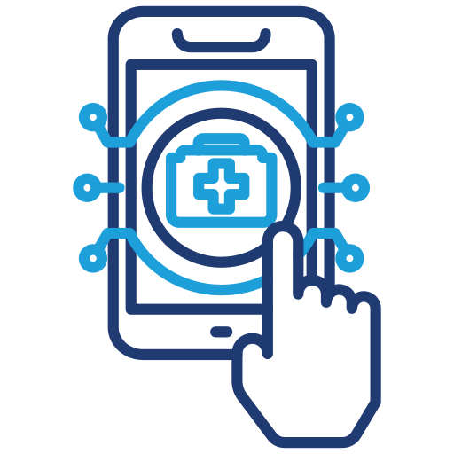

El impacto de las tecnologias en la sociedad
Las tecnologías digitales han transformado profundamente la manera en que las personas viven, trabajan, se
educan y se relacionan. Desde la masificación de internet y los teléfonos inteligentes hasta el auge de la
inteligencia artificial, cada avance ha modificado hábitos, economías e incluso la forma de entender el
mundo. Este cambio no ha sido uniforme ni neutral: ha traído oportunidades extraordinarias, pero también
problemas que la sociedad todavía está aprendiendo a manejar.

Aspectos positivos
En el ámbito de la comunicación, la tecnología ha eliminado casi por completo las barreras de distancia y
tiempo. Hoy una familia separada por miles de kilómetros puede mantener videollamadas diarias, y una empresa
pequeña puede atender clientes en varios países desde un solo teléfono. Esto ha fortalecido vínculos
personales y ha abierto mercados que antes estaban reservados a grandes corporaciones.
El acceso al conocimiento es otro de los grandes avances. Plataformas educativas, bibliotecas digitales,
cursos en línea y videos explicativos permiten aprender prácticamente cualquier tema desde casa y, muchas
veces, de forma gratuita. Esto ha democratizado la educación, aunque su aprovechamiento depende de la
conectividad y de la capacidad de cada persona para seleccionar información confiable.
En la salud, la tecnología ha mejorado la precisión de los diagnósticos, acelerado el desarrollo de vacunas y
tratamientos, y facilitado la telemedicina, que acerca la atención médica a zonas rurales o de difícil
acceso. A esto se suman los dispositivos de monitoreo personal, que ayudan a prevenir enfermedades y a
llevar un mejor control de la salud.
En lo económico, la automatización y la digitalización aumentan la productividad, reducen costos y generan
nuevas profesiones que hace dos décadas no existían, como analistas de datos, desarrolladores o creadores de
contenido. Además, el comercio electrónico y los pagos digitales han simplificado la vida cotidiana, desde
hacer compras hasta realizar trámites sin salir de casa.
veneficios principales
- Comunicación: contacto inmediato y global.
- Educación: acceso amplio y flexible al conocimiento.
- Salud: mejores diagnósticos y atención a distancia.
- Economía: mayor productividad y nuevas oportunidades laborales.
aspectos negativos
La brecha digital es uno de los problemas más serios. No todas las personas tienen acceso a internet de
calidad, dispositivos adecuados o la formación necesaria para usarlos. Como consecuencia, quienes ya estaban
en desventaja social o económica pueden quedar aún más rezagados, lo que amplía las desigualdades entre
países, ciudades y zonas rurales.
La automatización y la inteligencia artificial también generan preocupación laboral. Algunas tareas
repetitivas están siendo reemplazadas por máquinas o software, lo que obliga a muchos trabajadores a
actualizar sus habilidades. Si esta transición no se acompaña de capacitación y políticas de apoyo, puede
producir desempleo y precarización.
La privacidad y la seguridad son otros puntos críticos. Las empresas y plataformas recopilan enormes
cantidades de datos personales, que pueden ser mal utilizados, filtrados o robados. A esto se suman el
fraude, la suplantación de identidad y otros ciberdelitos que afectan tanto a individuos como a
organizaciones.
Finalmente, existe un costo ambiental: la fabricación de dispositivos requiere minerales y energía, los
residuos electrónicos son difíciles de reciclar y los centros de datos consumen grandes cantidades de
electricidad
¿La tecnologia es buena o mala?
La tecnología no es buena ni mala por sí misma; su impacto depende de cómo se desarrolle, se regule y se
utilice. Para aprovechar sus beneficios y reducir sus riesgos, es fundamental promover la educación
digital, garantizar un acceso equitativo, proteger los datos personales y fomentar un uso ético y
responsable. Así, la sociedad puede avanzar hacia un modelo en el que la innovación esté al servicio de
las personas y no al revés.

herramientas web
la trascendencia del ser humano es escencial para mejorar la calidad e vida de la sociedad. en la
actualidad la tecnologia avanza a grandes escalas es por esta razon que aquel que logre dominarla
llegara lejos.
herramientas para el desarrollo personal
- Educación y aprendizaje
- Google Classroom
- Moodle y Canvas
- Gemini y herramientas de IA educativa
- Miro, FigJam y Pizarra de Microsoft
- Salud y bienestar

- Moodpath
- meQuilibrium
- Google Fit
- Sleep Cycle
- Seguridad y privacidad
- LibreWolf
- Privacy Badger
- VPN
Puedes consultar guías y listados más amplios en Ciberseguridad.com o ISO 27001